为什么 5 月份的东西现在才发呢
因为我是懒逼，哈哈哈👲
顺道还补了点东西
什么是 IDA
其实 ida 全称是 ida pro
是最棒的一个静态反编译软件，为众多 0day 世界的成员和ShellCode 安全分析人士不可缺少的利器！（出自百度
初试 IDA
拿 ctf 的题目入门练练手，挂下题目链接，下载好题目首先发现是 exe可执行文件，直接拖进 ida 然后尝试 f5 反编译
很好，开局即结束，反编译进行不了，好像是使用的 ida 版本不对
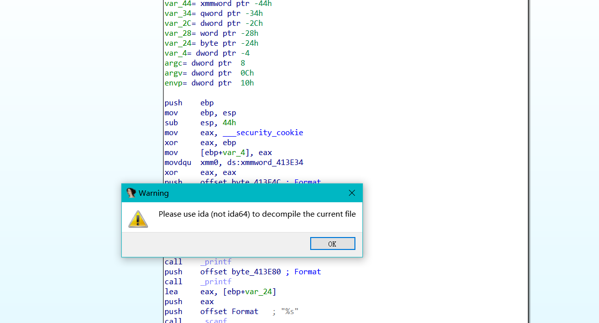
我的 ida 是万师傅直接给的，压缩包解压之后就能直接用，压缩包里面有两个 ida 应用程序，一个是32位的一个是64位的
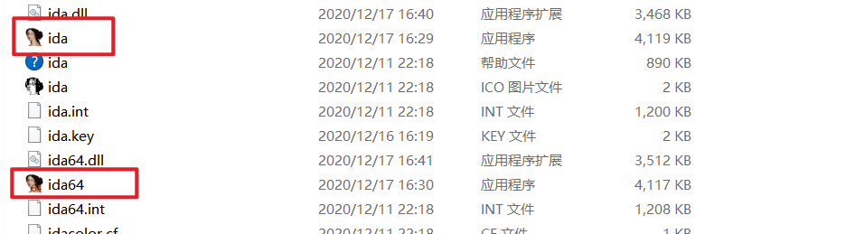
试着用32位的 ida 反编译这个 exe 文件，很好，又寄了
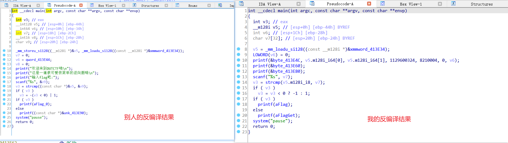
我的显示不了中文，虽然看出来了 flag 在 xmmword_413E34 处，然后对这个16进制的字符进行字符串的转换就可以得到 flag
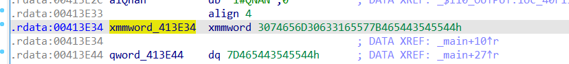
通过如下方式进行字符串转换，也不知道什么我的这个快捷键 A 用不了，难道是操作方式不对？？？
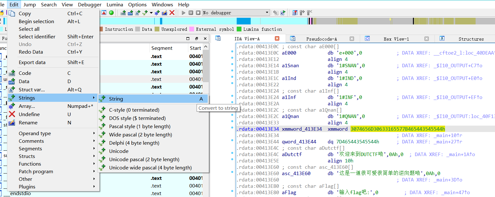
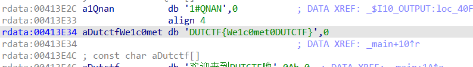
或者通过改视图也可以看到
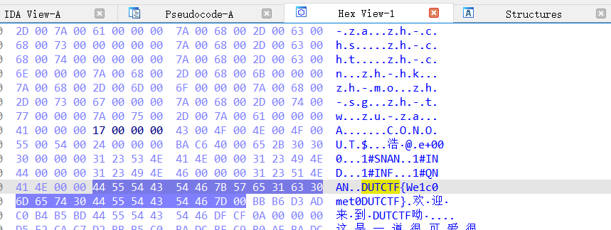
IDA显示中文
上网搜了一下 ida pro 显示中文的方式，但是网上的都是 ida Pro 7.0 版本的，我的是 7.5 版本的但是依旧可以用，具体方式如下
打开 ida安装目录/cfg/ida.cfg，对以下内容进行修改
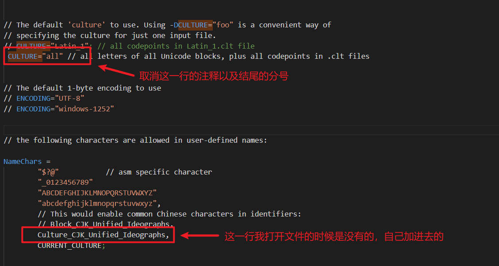
这样就能显示中文了
IDA调试
IDA远程调试
ida 和 linux 的双击调试
运行 dbgsrv
-
进入文件夹
ida安装目录/dbgsrv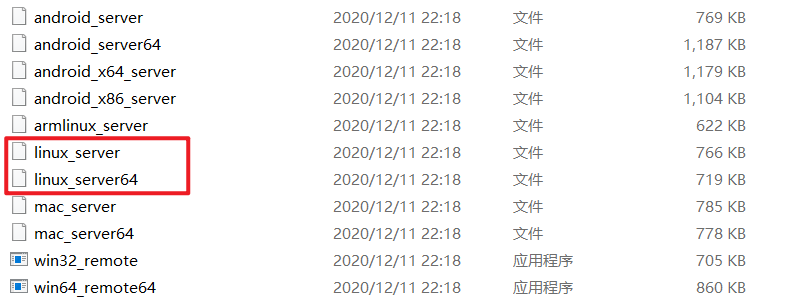
图中的这些文件都是 ida 自带的帮助我们调试的工具，我们依照自己的 Linux 系统版本选择正确的 dbgsrv
-
在 linux 中启动 dbgsrv
将对应的文件放入 linux 中，在文件所在的目录下使用终端执行命令
1
chmod a+x linux_server/linux_server64
将文件进行格式化后，执行命令
1
./linux_server or ./linux_server64
得到如图结果就是成功运行了该文件
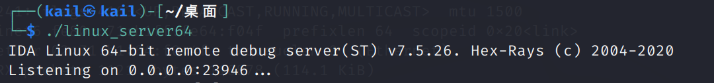
运行调试文件
接下来要做的是在 linux 中运行所需要调试的文件，如果所需调试的文件类型是 linux 系统所对应的，那运行它自然没有什么问题。
接下来介绍以下如何在 linux 中运行 exe 类型的文件
-
安装工具 wine
执行命令
1
sudo apt-get install wine
-
运行 exe
执行命令
1
wine 文件名
报错处理
-
运行 exe 时出错
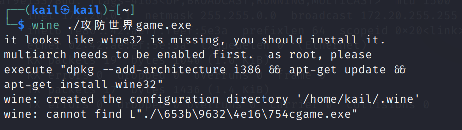
这是因为 wine 的版本和需要执行的文件版本不匹配所导致的，按照图中所给的提示，执行以下命令进行 wine32 的安装即可
1
sudo dpkg --add-architecture i386 && sudo apt-get update && sudo apt-get install wine32
ida进行联调
之前的两个步骤已经完成了 linux 中的准备工作，接下来就是打开 ida 进行联调
-
连接 linux
在 linux 中查看 ip 地址
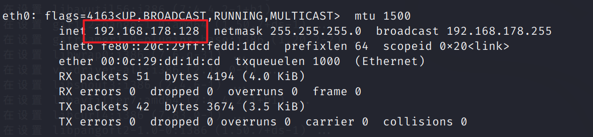
开启 ida，选择 remote linux debugger
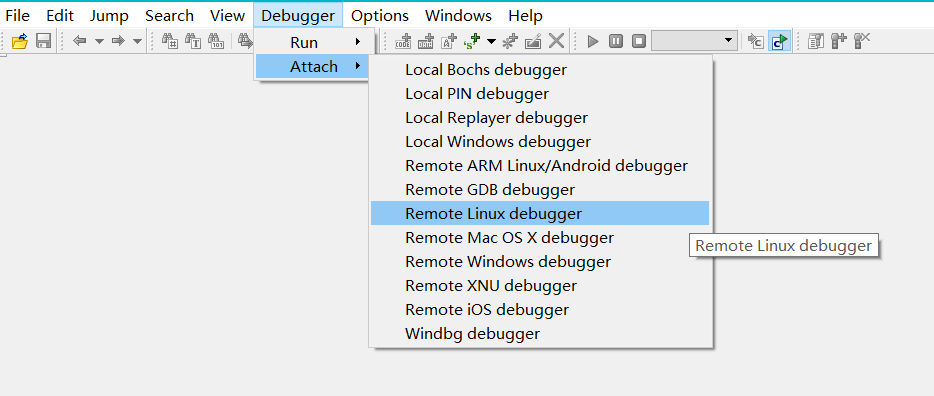
在窗口的 hostname 中输入 linux 的 ip 地址，并点击 ok
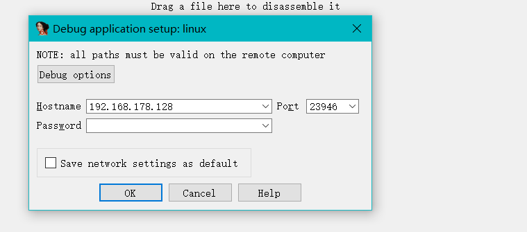
跳出来的窗口中显示的是 linux 中正在运行的程序
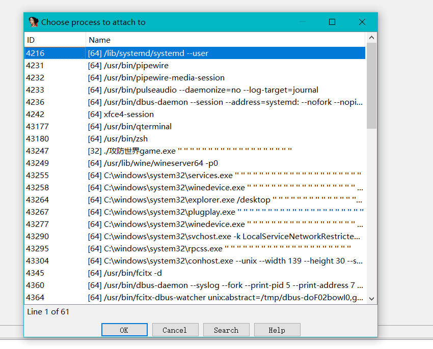
选择所要调试的程序然后 ok 即可。
注意点
选择 ida 调试的版本需要和 linux 的 dbgsrv 版本对应起来，比如说选的 linux_server64 那 ida 的版本要选择 ida64。
如果调试时出现报错，那就说明你的 ida 版本选择错了，换一下 ida 的版本即可
1 | linux debugger: more than one special register present |
另一种开启方式
在 ida 中打开想要调试的程序，然后选择 remote Linux debugger
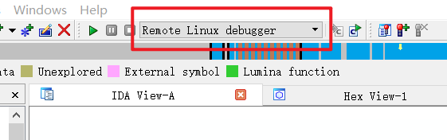
开始调试后会有找不到这个指定文件的报错
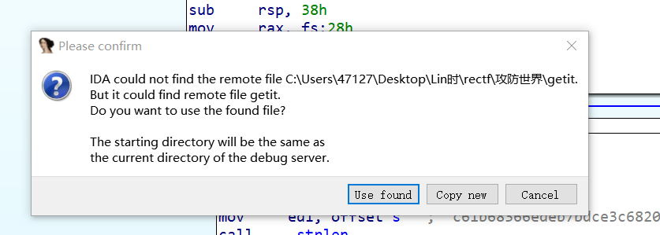
点 use found 或者 cancel 都可以，use found就相当于使用 ida 帮你找的文件然后直接加载出来了，点 cancel 就是自己指定要 debug 的文件，图示是假设我在 kali 的桌面上有一个 getit 的应用程序
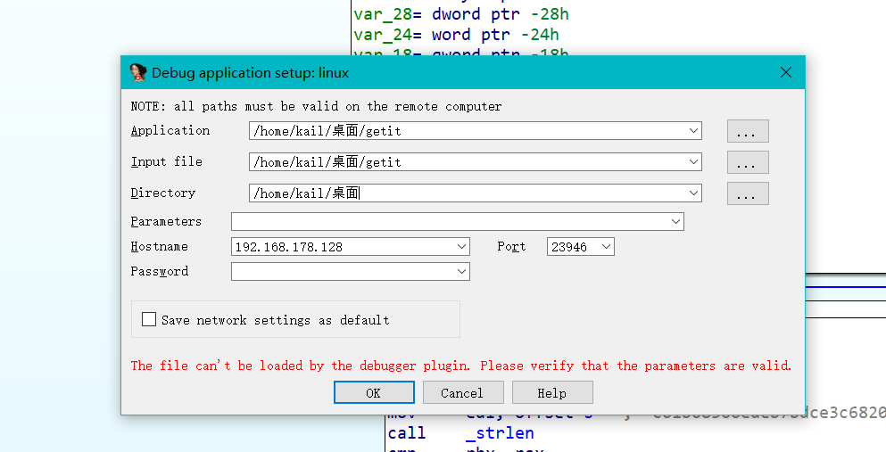
之后的调试过程都大同小异，（哈哈哈，现在的我知道了：原来第一个叫附加调试，已经开始运行的程序附加到 ida 上面进行调试；第二个叫调试启动，顾名思义也就是以调试的方式启动程序
IDA断点设置
其实断点有很多种，但是我现在就仅仅试过普通断点和硬件断点（也叫内存访问断点。
普通断点没啥好说的，f2即可
硬件断点
所谓的硬件断点就是它被触发的条件并不是执行了某句汇编语句，而是内存中的某一块位置被程序所使用到了，例如：往该地址中读取某个数或者向该地址中写入某些内容等等。
在 ida 中设置硬件断点和 xdbg 不太一样
举个例子：首先我的目的是希望程序能够断在 popa 处，换言之就是当程序再次访问了栈中储存
在 ida 中，我在代码段设置了一个内存访问断点
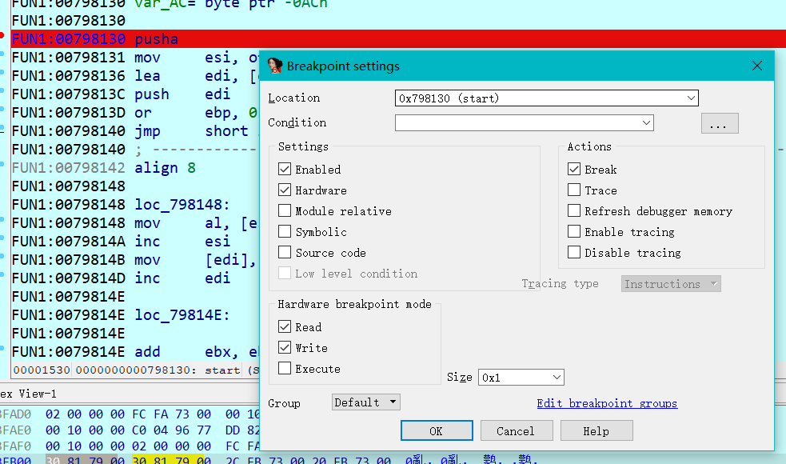
但是这个断点的位置就是在 0x00798130 处，而不是在栈中的存储处下的，所以正确的内存访问断点设置姿势应该如下
根据 stack-view 得到数据在栈中的存储位置
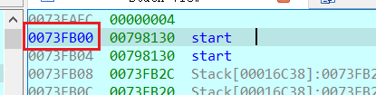
然后在主视图中转到栈空间中所对应的位置，并根据自己的需求，例如：触发断点的条件，以及断点的长度
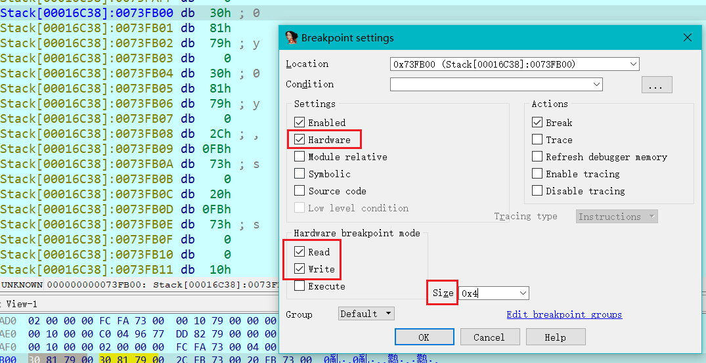
或者直接在栈视图中选中所要断的位置，然后在上方任务栏的 Debug 中选择 add breakpoint （在栈视图中 f2 设置断点快捷键是无效的，并且右键单击菜单栏中也没有这个选项，所以就得手动上了
在断点列表中也可以看到普通断点和硬件断点有什么区别
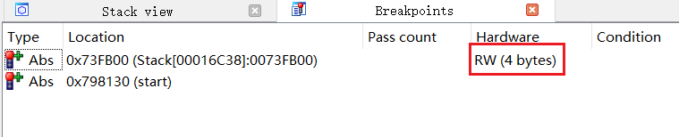
本文作者：GhDemi
本文链接： https://ghdemi.github.io/2022/09/27/IDA-%E5%88%9D%E4%BD%93%E9%AA%8C/
文章默认使用 CC BY-NC-SA 4.0 协议进行许可，使用时请注意遵守协议。